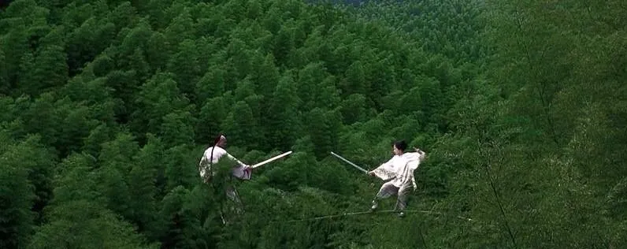

｛修订纪念版｝杜骏飞：不合时宜的思考（1、2、3、跋）
不合时宜的思考（合集）
杜骏飞

目录
编者按
不合时宜的思考（1）
不合时宜的思考（2）
不合时宜的思考（3）
跋：我们终将不合时宜

编者按
《不合时宜》系列因故暂停，我们结合讨论，修订了既往三期，附录了读者们的一部分留言，作为这几天彼此相聚的见证，敬请惠存。
文末，有杜老师写给大家的寄语。
另，我们也邀请读者把自己思想随笔或提问发来这里（njuduke@163.com），以作对话。
不合时宜的思考（1）
杜骏飞
1
国际疫情。
不要渲染邻国的不幸，因为这不能增加我们自己的幸运感。
也不要讥讽邻国应对的无能，因为这不能取代我们自身的反思。
2
世界卫生组织感谢中国，是因为我们给世界留下了时间窗口。春节以来，我们确实尽力了。
似乎所有人都在感谢武汉。请媒体注意：那些感谢的话语中，满含悲悯。
3
灾难面前，有两种官员值得讨论，第一种是肯作为、但是做错了的干部，第二种是不作为、只“会做官”的干部。
对前者，无妨以观后效，对后者，倒是不能宽恕。
4
湖北，调整统计口径后，一天跳增确诊人数一万多例。但很多人说：这是真实数据，反而让人放心了。
说**真话，能维护稳定。**

5
三百名记者云集武汉，一些敏感的民生问题，竟然还需要方方这样一个作家来闭门记事。
可是，这些记者一定很优秀，才会被派往疫区吧？
6
世卫官员很郑重地说：迄今，我们认为只有一种药物是真正可能有效的，那就是瑞德昔韦。原文是：There is only one drug right now we think that may have real effiiacy and that is remdesivir.
他的意思是，应该优先上马那些可能更快挽救生命的研究项目。
但这句话在一些中文新闻稿中被“漏掉”了。这是国之大忌，也是新闻伦理之大忌。
7
疫情期间，一口气上马了两百多项新冠临床试验，一些西药试验设计，既没有坚持随机、对照，也没有使用盲法评价。
还有一些药品，仅仅基于体外实验就被推向受众、推向患者。甚至，连“同情用药”的性质也不作说明。
人命关天。公众病急心切，可以理解，但是——科学家要有科学家的样子，记者要有记者的样子。
8
前些天，可能是“扔下就跑”新闻读的多了，午睡时，一位博士生跑来，扔下厚厚的一本毕业论文，转身就跑。
不等网民提示，我立即就惊醒了。
9
“疫情上报第一人”张继先大夫被推荐为全国劳模了。
李大夫的结论也快出来了吧？
10
1942年，霍夫兰应召率领主要由心理学家组成的专家小组赴华盛顿，研究战争宣传与美军士气的问题。其中，关于论辩时是讲一面之辞还是两面都说，实验表明：与“一面提示”相比，“两面提示”对高文化水平的群体有更好的说服效果。
这是新闻学专业本科生一年级所学的内容。
11
文学界不是只有方方在言说，方方的讲述真诚而日常，所以是最能被我们看见的部分。
但我始终觉得，那些沉默的知识阶层，他们的沉默是另一声惊雷。
12
我对顺丰小哥汪勇这样了不起的普通人感到敬畏。
摩顶放踵，宽宏坚毅，这是多好的人民。希望将来能有人拍一部电影：《公民汪勇》。
13
长江日报。
我们无妨自问：设若易地而处，自己正在其位，在哪些地方可能超越长江日报，在哪些地方一定和长江日报一样？为什么？
14
昨天我对同学们说：国难来临时，你们可否重思一下各自的爱豆（偶像），他们是什么人，他们为国家和人民做了什么，他们对你一生的价值何在？
是时候了，反思一代人的偶像观。
是时候了，反思一个时代。
15
希望国家能为疾控医疗设立“伍连德奖”。——虽然科技进步多矣，但此次疫情治理的前期，与百年前伍连德的那一次国家疾控相比，无论是尊重专家、信息透明，还是处置及时，我们其实都还有所不如。
在本质上，决定成败的，还是人和观念。
16
朱学勤说：“我怀念鲁迅，有我对自己的厌恶，常有一种苟活幸存的耻辱。日常生活的尘埃，每天都在有效地覆盖着耻辱，越积越厚，足以使你遗忘它们的存在。只有读到鲁迅，才会想到文字的基本功能是挽救一个民族的记忆……”
阎连科说：“经此疫劫，让我们成为有记性的人。”
记忆从不灭绝，历史自在人心。
17
早起，研究了一下“司马3忌”其人其事，原来，这样的政治角色不仅是真实存在，且属于应运而生——甚至，我们身边就有。
但真正的问题是：这样的“人物”为什么会混得风生水起？
18
在这场疫情里，我们看到了极少数人的恶，少数人的英勇，多数人的善良与无助。
所谓灾难，大概就是这样的故事：少数人以自己的英勇牺牲，慰藉着大多数人的善良——并救援着他们因极少数人的恶而导致的无助。
19
无分寸地黑中医，与无上限地神话中医，效果是一样的。在本质上，这是同一种思维方式。
有一份证据说一分话。过度“概化”一个具体结论，或违反逻辑地攻讦，或以政治、道德、历史取代科学，都会让人看不起。
20
《红袖章们的春天》。
红袖章的某些表现，源自五十年前，但五十年前源自什么，作者没有写。
21
无关乎词藻，也无关乎作者。
当我们审辩“山川异域 风月同天”与官样套话的差别时，会发现，所谓“雅语”，在当下的根本意义，并不是“风雅”或“修辞”，而是它背后的文化象征、社会情境，更远一点说，是价值体系和政治观念。
22
感动而不反思，一定会有更悲壮的下一次。
23
我们的下一代，还将生活在这片土地上，不是吗？
很久以后，他们一定会问我们：那时，你们真的努力过吗？
读者留言
杜骏飞：谢谢大家的讨论。额度已满，但所有留言、信息，无论褒贬，我都看了。《不合时宜》，会继续写下去。
杜骏飞：筛选留言的规则是：无论赞成反对，均可上墙，但请（1）语句通顺（2）理性平和（3）特别注意，应先读懂原文。筛选留言的目的在于——让知识读者对“公共讨论”和“思想市场”有信心。
RbK：老师，应该是瑞德西韦是唯一【可能】有效的药。
念念：老师写的这句“感动而不反思，一定会有更悲壮的下一次”让我突然惊醒。
我们似乎花了太多时间去赞扬牺牲、歌颂伟大、为集体主义落泪，却忘记了追责、质疑与愤怒。
可事实上，只有感动和反思兼行，我们才能走得更远。
三只小猪：“我感到难过，不是因为你欺骗了我，而是我再也不能相信你了。”——尼采
念念：许多年后，假如有人问我，当年你为社会做过的贡献是什么？我会说：我传播了很多充满人性、良知、散发着正义光芒的文字，我拒绝了与邪恶同流合污。——柴静
北极熊碗：离我们最近的是事实，离我们最远的是真相。
大理寺少卿：从传播的角度看，我觉得我们国家对内的宣传已经很好了。谣言虽然有，但是也很快被澄清并做了处理，谣言数量也不多，网络上大多都是正能量，这是全民对抗疫情所需要的，这就是人心。至于暴露出的不好的问题，现在确实不好暴露太多，给人们不好的情绪，这应该主要是从政治角度考虑，网络舆论从根本上解决不了，只能选择在适当的时候推动解决，这个适当的时候，可能就是疫情结束以后。
作者回复：疫情结束后解决，您能确定吗？
Guerre：给你纠个错，不是盲法，是双盲法，既然要替循证医学和科学鼓吹，就最好说的准确些，不然没有学术范…
作者回复：抱歉，你错了，“盲法”是规范术语。另外，本文没有鼓吹什么，除了理性。
东经119°：科学家要有科学家的样子，记者要有记者的样子。
一条睡着的鱼：最可悲的是，我们丧失了独立思考的能力。
大雅斋：感动而不反思，一定会有更悲壮的下一次。
辞小广：字字珠玑，感触良多。
| ᐕ)⁾⁾：后人哀之而不鉴之，亦使后人而复哀后人也
慶雨：这样的文章才像是读书人写的。
老地主：老师，写得真好！入木三分！致敬！
ff：所谓灾难，大概就是这样的故事：少数人以自己的英勇牺牲，慰藉着大多数人的善良——并救援着他们因极少数人的恶而导致的无助。
Mr.Y：科学家没有科学家的样子，记者没有记者的样子。那是因为民众没有民众的样子。我面壁反省。
荣仔：字字珠玑，鞭辟入里，是老师的样子。
Arthur：“听，那是哭声，很近很近，近到我想忘记。”
张培：微言大义，发人深思！
这是一个知识分子的独立思考，纵然不合时宜，也要坚决说出！
感谢杜教授的一次又一次的启蒙。
史立辉King：如果必须讲灾难有什么意义，那就是让一代人从梦里醒来，让他们自己去体会什么才是成长，让他们去了解这个世界的真真假假。
秋天的童话：记忆从不灭绝，历史自在人心。
明暗之间：在这场疫情里，我们看到了极少数人的恶，少数人的英勇，多数人的善良与无助。
所谓灾难，大概就是这样的故事：少数人以自己的英勇牺牲，慰藉着大多数人的善良——并救援着他们因极少数人的恶而导致的无助。—-所言极是，抚慰人心！
端木君：鲁迅弃医从文，为的是唤醒沉睡中的国人。
混混沌沌地活过了几代人，新闻反复，各有目的，我不看的，关在屋里的这些日子，伴着喝茶的是鲁迅文集。
Paha：谢谢老师。您说这代人的偶像观需要反思，我想问的问题是，少数人的偶像观（可能）存在问题，是否需要一代人去反思或验证？老师您认为我们这个时代需要什么样的偶像才是合适的呢？
作者回复：其实，这是需要读者回答的问题。我的回答，已在文中。
MYG：感动而不反思还情有可原，怕的是不仅不感动，还要借机贴金，庆祝人民战争的胜利。
Drawany：很迟钝，今天才看杜老师的文章；更幸运，一种相见恨晚的感觉吧，悄悄表达一下喜欢。
另外，希望如鲁迅先生所说“希望中国青年都摆脱冷气，只是向上走”，“做能做的事，发能发的声。”
共勉。
苏林✨Sulin：这次疫情给我最大的收获就是对个人和社会的反思。
王亚洲：很不幸，还在疫区湖北。广东，海南捐赠的蔬菜等生活物品，从来不会出现在普通老百姓手中。一根萝卜10元，一棵白菜30元，在作为农业主产区的江汉平原，是从来都没有过的事情。
一场疫情，让我重温了大洪水来临时的那种惨痛记忆。
不想说什么，也不想留下任何记忆，逃离的日子，也许快要到了，可能还要持续数月，不管怎样，我们都是幸存者。为逝者好好活着吧。
FANGZHOU：深刻而又真诚。
天礼：好文笔！已经尽全力说了所能说岀来的，且还易懂，殊不易也！
李梅：虽寥寥数语，每一句都入心。
这样的文字，静水深流，很有力量。
谢谢。
山：我们从不缺乏“思考”，也不缺乏“言语”与“文字”，我们更多的只是如此，“真的努力过吗?”
Rouicho：看到“放下就跑”那段时笑了，杜老师很幽默哈哈哈
老陈（老槐树）：科学家要有科学家的样子，记者要有记者的样子。官员要有官员的样子——人命关天，民生第一！
也好。：我们铭记历史，不是要时刻谨记着仇恨，而是吸取教训，不重蹈覆辙，不让历史重现，莫让悲哀再来。时代的一粒沙，压在个人头上，就是一座山，所以，学会反思，莫让更多无辜者牺牲。
Nora：本文没有鼓吹什么，除了理性。
陆子也：人们思考和说话大抵是这样的一个过程。一开始是想到什么就说什么，但经历挫折之后，有些人就开始屈服，有些人就看开，有些就沉默。
于是渐渐地就不再说或者只说些无关痛痒的，虽有思绪万千但说出来的却无二三。
后来有一天实在憋不住又想说的时候却发现已经失去了思考的能力，想说也说不出来。
再后来，便连思考也不会了。
毛毛兰🍀🍀：有很多话想说，又什么也不想说了。
超英：安安静静的字，一个一个，敲在头上，扎在心中。
🇨🇳提D依依：为您点赞，最近看的最理性的文章，让我们每个人都想一想。
邓果冻：我们的下一代，他们会长大。我们需要一个向内自省的国家纪念日！不仅是告诫我们的下一代，更是告诫我们自己。
自我训诫多了，训诫良善者的举动就少了！
moonlight-lx：疫情中天天宅着，一早醒来就是刷机。很纳闷《杜课》怎么了，沉寂了很多天？人闲时间长吧。今天又见面了，终于释然：杜老师和《杜课》一切都好就好。
鲁亚雄（理念决定现实）：有热度的理性文章，呼吁不要急于把疫情熬过去，等待下一次犯错误的机会，而是要反思，深刻反思。或者你反思一下为何如此大灾面前国人还只会感动不会反思。看到作者的心在滴血。
Lost-Sa：我不悲观，我看到国家的治理，普通人的克制，大多数人的理解，每片土地都有不足，都有悲哀，只有这片土地能让我们消化我们的不足，我们的悲哀，也只有这片土地能有属于我们的英雄承载我们的过去，我们的未来。
潘华良：杜老师写得好克制，可是即使你如此理性，还是有谩骂的吧？！
作者回复：批评会看，谩骂不看
戒酒消愁：文天祥的《正气歌》里说，“正气”的理想状态并非是“时穷节乃见”，而是“皇路当清夷，含和吐明庭”，是政治清明高效，人民安居乐业，是国家和谐安定。
宁愿岁月安稳，世上无英雄。
aprilflower：然而造化又常常为庸人设计，以时间的流驶，来洗涤旧迹，仅使留下淡红的血色和微漠的悲哀。
毛偉華：只提问题，不说解决方案，其实就是发泄。
作者回复：请参见《怎么办》系列。
立德树人：不合时宜，是知识分子的风骨，也是人类社会最不可或缺的盐。
qiu.king：最近感觉已经迟钝，今天读了文章，有点吸氧的感觉。我病了吗？
RAY：汪勇，是好样的，不过“义士”比“公民”可能更贴切，方方老师可能是个更好的“公民”代表。
HGK：长江日报疫情以来一直荒腔走板。本文提了长江日报但态度含糊。为什呢？
作者回复：请仔细读，本文对如何思考长江日报表达了态度。
平湖秋月：闭户期间，再次阅读了鲁迅全集！
绿雨入田：对十七年前的那场非典的回忆，在当下疫情降临之际，显得有些模糊，有些支离破碎了，这才是我们的悲哀。
Tommy：生命对谁来说都只有一次，我们反思是为了更好的明天。而信息的不透明以及一些个人情绪化的喧哗，都是对生命的极不尊重！
丁凌：看了杜老师的文章感触良多，我们的国家离“兴”还有很多路要走，苦难的记忆唯有反思才能转化为前行的动力。从先秦到今天，我们一直在台阶下来回踱步，每一次灾难都伴随着走向更高文明的机遇，但抓住真的那么难吗？
卢鑫💕：扔下一本毕业论文就跑，哈哈哈哈哈，不笑了，低头再改改我的毕业论文……
Adam Dai:似乎无甚可写，因为作者把我们所想的，不敢说的都想了和表达了……问题是该听的人未必听得到听得进和愿意付诸努力和改变——最后这个才是重要的；以及该想的的和该说的人很多人未必有时间和有这个教育和思考去想和敢说，也许这才是宿命的可怕。
符号：我读了两遍，回味无穷。接着看了后面的评论；真正把该文读懂了的还不少。国家幸甚，民族幸甚！
周晶：作为一个孩子的父亲，最后一句孩子提问深深刺痛了我，爸爸，当年你做了什么，你努力了吗？我愤怒过，抱怨过，喷过，也听了话，做了最低层次的所谓贡献，但是终究面对孩子的问题，答案只能是其实爸爸也只是做了被保护的看客。
关于长江日报，首先我们很多人看到的是荒谬，低级，无语，其实如作者的反问，换位，我们能如何，其实这里要表达的不是我们比他们强比他们更有良知，而是，我们是否了解他们荒谬背后的无奈和自嘲，那是什么，那是不见底的洞，这才是深深的可悲与可怕。
Daoqin Li：记忆从不灭绝，历史自在人心！
Sugus：假如我们还是从前的我们，世界也还将是从前的世界。
王天竹：理性需要智力，心平气和需要能力。
🌊风继续吹：敢问教授，独立思考的人朋友圈里很多，不独立思考的人（比如在农村里很多没有机会接受足够的教育熏陶的民众）呢？ta们或许才是大多数。
人性有光明有黑暗。但作为蝼蚁，作为雪花，没有一个个体是完全无辜的。
这些天看了很多文章，似乎都是一种套路，不是需要一个icon去感动，好比李医师与钟院士（当然他们都是值得我们的尊敬），就是需要一个出口去承载我们的愤怒与痛苦，比如吃蝙蝠的人与我们眼中“不作为或乱作为”的某些官员。真的是这样吗？如果这是真的，我们的独立思考也是廉价的。
作为一个微小的个体，我尊重那些勇敢的逆行者们，我努力争取去靠近“诸恶莫作，众善奉行”的标准，但我不敢轻易去判断一个人一件事，因为众生的眼里，每个人都有每个人认定的真相。
感谢您的理性与节制，借评论区有感而发。
沧海一粟：堪称哲理文，每一段每一句都深沉蕴藉，含义丰富而深刻！特别是这一句：知识界的沉默何尝不是另一种声音……有警策有无奈更有抗争。
刘筱秋：对任何大疫的认识都有一个过程，总结这次战役一味责难于事无补。当然要分清责任，汲取教训，总结经验，但一定要分清主流和支流，看到问题，也要看到成绩。
静悦：“本文谈的是众数，不是个别。”
那分明还是要求大多数粉丝反思自己粉的偶像。但有没有爱豆，爱什么样的爱豆，不是价值观的问题，只是个人喜好问题，完全不影响绝大多数粉丝在普世价值观基础上喜欢自己的粉丝。
作者回复：同意
056—526：书生意气可以理解，但当前战争状态下，归根到底要办实事。
办法在哪？在科技突破，在用药突破，所谓”用药如用兵，用医如用将”。只有”药到”，才能”病除”！
1.精准检测确诊；2.前置轻症向重症拦截线；3.有效降低死亡率；4.拿出民众用得起自防药（疫苗之前）；5.上述做到，则将”生死阻击”搏斗转化为治疗病毒肺炎进程。
用药方向：一定是，只能是中西医结合，老药新用有很大潜力。
创新突破的主力是有最多实践的一线的中国的生物学家、医学家。当然也要以开放态度接受国际性生物医疗支援。
天佑中华！
海伦英语：杜老师“不合时宜的思考”，是我自疫情以来看到的几乎是最全面最深刻的文字。真是：一个字、一盏灯💡
认真看了几遍，觉得自己的灵魂洗了个澡
我们的下一代，还将生活在这片土地上。
很久以后，他们一定会问我们：那时，你们真的努力过吗？
希望能如此回答孩子们：我们不仅努力过，还认真反思过！
作者回复：谢谢你
麦斗：一字一字的看完了。这不是入木三分，而是入石三尺。可惜，石头是冰冷的。钻出来的那一点热气和惊艳，很快就散去了。醍醐只能灌顶，毕竟不是被喝进口里的良药。又能怎么样呢……
lx：近期读来心潮澎湃的文章大抵都是作者加读者共同创作之结果，深以为然“精彩留言，让知识读者对“公共讨论”和“思想市场”有信心。”在悲情、悲伤、悲愤中始终能看到希望！感谢😊
秦淮明月：偶像其实也是与时俱进的，每个时代有每个时代的偶像，没有哪个人一生一世就崇拜一个偶像……只是我的偶像是这个时代的英雄！
木羽：杜老师雄文，字字珠玑，佩服。然而唯对第七条保留看法：都知道盲法对照是科学态度，但是每个危重病人及家属有多少愿意进入盲法对照组呢？看客们尽全力指责，难道不能换位思考一下吗？
作者回复：同意。
龙键：汉语水平考试HSK”就是中华人民共和国国家汉语国际推广领导小组办公室（简称“国家汉办”）和孔子学院设立的为测试母语非汉语者（包括外国人、华侨、华裔和中国少数民族考生）的语水平而设立的一项国际汉语能力标准化考试，所以缩写才是H（HANYU汉语）S（SHUIPING水平）K（KAOSHI考试）。
在日本的中国汉语老师写的文字，被国人感动成日本人汉语水平了。
作者回复：请参见上一篇。
不合时宜的思考（2）
杜骏飞
1
鲁迅说：“我们从古以来，就有埋头苦干的人，有拼命硬干的人，有为民请命的人，有舍身求法的人”。
不要忘记，武汉的天空上，闪耀过这些群星，它们一一对应着鲁迅笔下的人。
更不要忘记，那些成为代价而牺牲的人。
2
钟南山院士说：“新冠肺炎12月31日就已经明确，1月3日已经分离出病毒毒株，1月7日给了联合国，但我们仍然没有发布。我们CDC（疾控中心）的地位太低了。”
他的话里，一定有关于权力的痛楚。在美国，应对新发疫情的决策，是由卫生与公共服务部和疾控中心共同做出的。
在科学未受尊重之前，我们还将为忧患而生。
3
我曾说过：
无论环境如何变迁，无论技术如何侵入，无论世风如何不古，真正的新闻业仍将是“纯正的知识分子行业”，整个中国仍然对“一切为了人”的新闻人充满期待。（杜课496期、杜课928期）
原本，在文化传统里，“知识分子”（intellectual）的三大来源是学者、作家艺术家、新闻记者。
而在这凛冽的寒风里，只有新闻界，还能不绝如缕地贡献知识分子。
4
《人民需要什么，就转产什么》。
医疗物资紧缺，一批中央企业从零开始，以战时模式，紧急转产熔喷布、防护服，不计代价，不顾一切。
这些年，很多央企的口碑不算好，在社交媒体上，就连赞美它们都有风险。但我要诚实地说：我喜欢它们现在的样子。
5
李文亮医生去世，好像很久了，但人们从未忘记过他。
他七年前发布的微博“朋友们，从今天起你们也许就联系不到我了，因为我要去拯救地球了”，评论区犹在更新。
无数人像是打卡一样，早上来问一声“早上好啊，李医生”，晚上说一句“晚安啊，李医生”，轻声慢语，平平易易。
有人跟他聊天气：“今天我们这儿阴天，你一切都好呀？”有人向他报告疫情：“疫情在慢慢好转哦。”
孩子们跟他谈中考，谈爸妈的争吵，谈数学太难了，年轻人跟他谈工作，谈嫁娶，还告诉他：“鸡鸣寺的樱花开了”。
他的同事留言说：“老李，早点回来，要早点回来啊。”
千言万语成凝噎，谁当此刻作寻常？
一个人，活在别人的记忆里，活在人们无尽的泪水里，他就不会真的死去。
昨天我催问关于李大夫的调查结论。其实，李大夫现在已经不害怕了，也不需要结论了。
而我们，也不需要结论了，因为在我们心里，早已经有结论了。
真正需要这个结论的，是需要做这个结论的人。
6
昨天，一位名叫罗启培的镇长殉职了，四十二岁。此前，他三十三天没回家了。
这位罗镇长，如果他不去世，也许不会有外人知道他。如今以身殉职，头条也不会是他，将来的国家纪念碑上，也未必有他。
还没有一位高官因抗疫而殉职。而我们，离不开这些辛劳的镇长、村长。
7
王志纲在《邓公的遗产》里说：邓公的遗产已经深入我们的骨髓，指引着我们的前进，只要我们尊重人性、尊重常识、顺应规律、实事求是，**不犯颠覆式的错误，中国的崛起是挡都挡不住的。**
他说的是，“只要”。
8
医护人员驰援武汉，抛家别子，以身赴险。周晓虹教授写道：“吴地悬壶尽入楚，从此白衣做战袍。”
一些地区出台了前线医护人员子女初高中入学相关优惠政策，就有人评论说：“请停止加分，别拿公平当人情，别慷教育之慨。”
此事并无裁判，不过，罗尔斯的正义观可作参考。
《正义论》里说，应该设置一道判断意义上的无知之幕（the veil of ignorance），尽量屏蔽那些会影响人们缔结契约的各种特殊信息，以确保无人能设计有利于自身的规则。这样一来，正义原则就是一种公平契约的结果。
简言之，在这个案例中，只有当评论者不知道自己可能会是救险医生、还是旁观者或其他家长时，他的判断才值得参考。
如果你是一位烈士的遗孤，你的父母会在天上看着世人。
如果你还是觉得费解，有一句浅近的告诫：将**心比心，才有公心。**
9
顺便说一下湖南妹子田芳芳。
她是第一批请战驰援的护士，正在武汉支援方舱医院。有一天，她在纸上写下“希望国家给我分配一个男朋友”，照了相，还公布了择偶标准。
看她笑嘻嘻的，此举也许不算一本正经。而国家，也并不欠她一个男朋友。
想起1951年的这个时候，魏巍从朝鲜采风归来，饱含着泪水，写下了《谁是最可爱的人》。女青年表白志愿军的书信，也像雪片一样飞向保家卫国的前线。
今天，也许已经没有多少作家肯蘸着泪水写前线了。他们宁愿写民国，写大清，写玄幻，写小资，写宫斗，写天下太平。
而2020年，也已不复有1951年的爱情。
10
读《我不敢看医生的朋友圈》。在那些慷慨西去的故事里，有“吾已许国，再难许卿”，还有“妈妈一心想保护的人，要去保护别人了”。
《新闻调查》原制片人张洁老师伤感地写道：“方憾此生未学医，疫来只能刷手机。”
我留了言给他：“惟愿此心能医国，不教后世长太息。”
读者留言
东经119°：他说的是，“只要”。
芊芊妈：读李文亮医生那段，突然眼睛饱含泪水，是的，一个人活在别人的记忆，活在人们无尽的泪水里，他就不会真的死去……愿人们永远记着这些平凡而又伟大的人……
袁棣：我在武汉抗疫，我也希望国家分配我一个男朋友。
蒙晓平：杜老师写的真好！我今天也在朋友圈催问了这个问题，杜老师写出了包括我在内很多人的心声：
其实，李大夫现在已经不害怕了，也不需要结论了。
其实，我们也不需要结论了，因为我们的心里，早已经有结论了。
真正需要这个结论的，是做这个结论的人。
桴浮： “惟愿此心能医国，后世不必长太息。”读到此话时，不知为何，我发现我的眼中竟有泪水打转。
Marui：看到李医生那里，忍不住哭了……
人们有所改变，他便没有白来。
念念：这几年常有人唱衰媒体行业、痛呼“新闻已死”。但其实新闻是不会死的，只要新闻人依然愿意为真相发声。
而就在此时此刻(夜晚11点)，依然有很多很多人在守护着我们这个时代的诗意。
愿我有朝一日能加入这个行列。
陈君：真正需要这个结论的，是做这个结论的人。
liuyq~：用看似不经意的娓娓道来，向人间撒下在高山之巅和深潭幽谷思考的力量！这些思考和文字温暖人心、沁人心脾，让这个颠沛流离的世界有了静水流深般片刻的美好时光。
伊伊伊伊伊：在科学没得到应有的尊重之前，我们还将为忧患而生。
史立辉King：媒体报道了很多感动的人和事，我一个人看的时候有时候会哭，但应该不是感动。我们除了感动还能做些什么呢？没有人想当英雄，他们是被迫的。多少年后谁还会记得一个又一个牺牲者的名字呢？不从根本上去寻找解决问题的办法，多少年后还会有各种各样的人祸存在，与此同时还有一如既往的“感动中国”。
Amy王荣敏：真正需要结论的，是那些下结论的人，完美呼应昨天的文，唤不起他们的一点点良知。
无名：真正需要结论的，是给这个结论的人。
那天，当他的消息和言论像漫天飞絮时，我没有转载任何一方的言论，我发了一段截图，里面是借用的网上一段话：
“做医生很辛苦，他时不时会抱怨一下工作，「累死小爷了」，虽然他时常把「不想干了」挂在嘴边，可真让他离开，他根本舍不得脱下身上那件白大褂，他内心的想法是，「病人虐我千百遍，我待病人如初恋」。
翻看他的微博，你会觉得他有些可爱，这位眼科医生内心好像还住着一个小男孩，如果路上有人叫他「叔叔」，他会「气疯」，觉得自己「受伤了」，他还很喜欢恶作剧，住酒店退房的时候会把被子叠成里面有人的形状吓唬服务员。
他曾这样形容武汉的秋天——它自有一股不热不冷的温柔，在这个季节里你能体会到最淅沥的细雨和最轻柔的风。”
我只是想说，他和我们一样，只是个普通人。
张培：言短意长，耐人寻味。读出一些《世说新语》的味道。最后杜老师给张洁老师的续诗，颇妙。必须点赞。
蕾蕾：眼看杜课就要接近一千零一课了，真有点不舍。于您，我只是个陌生读者，然半路而至，一路追随。景仰更敬佩杜教授（请原谅我还是想称呼杜老师觉得更亲切一些）的学者精神和人文情怀，这样有品质的公号太值得珍惜了。祝福杜课。
小伙伴：光芒，破夜而来！
YolandaC：看到张洁老师，想起了柴静。
Yayahua：我现在就去给李文亮医生道一声晚安。
飘落的雨：这场疫情，武汉的天空上闪耀着群星，它们一一对应着鲁迅笔下的人。忽感悲哀。
GD亲故哒：直到今天还觉得如今的生活体验不真实，就好像看到的某个灾难电影，就怕感动之后，还会重蹈覆辙。“方憾此生未学医，疫来只能刷手机。”
这太真实了，希望只能对着冰冷的屏幕落泪的日子赶紧结束，所有人都可以成长到让祖国的未来变得更好。
小二宝：你们赞美大自然令人赏心悦目的千姿百态和无穷无尽的丰富宝藏，你们并不要求玫瑰花散发出和紫罗兰一样的芳香，但你们为什么却要求世界上最丰富的东西——精神，只能有一种存在形式呢？
ao li ya：我也是半路关注杜课的，关注了就离不开了。所谓知识分子的风骨，所谓新闻人的操守，在杜课这里点亮的一盏灯，让我们相信，只要有杜课这样的空间存在，我们的民族还是会有希望的，但愿不要太晚。
牧马天山：掩卷叹息！读书人的价值在写出这样的文字！
郑轶伦：按照无知之幕的观点，即我们有可能是医生、有可能是医生的孩子、有可能是其他更有可能的任何人。所以，在这种前提下，用无知之幕的理论来论证加分的公正性似乎是不太成立的。另外，用给孩子加分的政策来弥补前线医生所冒的风险，似乎也有值得讨论的地方。
牧马天山：读书明理，说是这么说，可是现在众生读了那么多书，又明了什么理？就算有明了理的，又位卑言微，发的声淹没在高音喇叭中，世人几人能听到？我转发了，算扩一下音……
作者回复：我们未必有用，后人一定有用。
锦瑟：风骨即本心，何人作古，何人千古，人心可鉴。
化学生物的姐姐：疫来想起医，疫后又能有多少人对医护行业抱有感激敬仰呢？17年前的非典，人们也是赞扬白衣天使，可是这17年间医患纠纷不断，伤医杀医时有。我也是学医的，我觉得我们现在不是要歌颂赞美医护人员，而是要真真正正地去改善医患关系。医生和患者都是当下医疗体制结构性、群体性矛盾的直面人群，患者怀疑医生黑钱，医生担心患者伤害自己，这样的医患关系是畸形的。我自杨文医生被杀案后，感受到的不是对某些人的警醒，而是一些人居然把这个当做威胁医生的幌子，恶狠狠地出口伤人，叫嚣：“看不好就砍了你。”我们也是血肉之躯，国难当头，我们可以以身许国，可是我们也希望有措施能保障自身的安全。谢谢老师!
Mr.Y：关于子女加分:
1.如已有评论指出的，对抗疫一线的医护机会不均等。同劳不同酬，不宜一。
2、赏功臣子女是王朝宗族社会“户荫”的遗留，与人格独立的现代公民精神相悖。甲劳而酬乙，不宜二。
3、因此而减少他人接受公立教育机会，甲劳酬乙而损无辜之丙，不宜三。
4、义务教育应收尽收，高等教育唯才是举。欲弘一公义而坏另一公义，不宜四。
5、抗疫医护对公共事务有杰出贡献。然有贡献者不止此一职业，不止此一事，不止此一时。考生以非学术原因加分现象存在已久，近年似有汰减。今开此例，如他人何，如他日何。不宜五。
6、抗疫医护往小了说，是恪守职业道德；往大了说，是闪耀人道人性光芒。不管大小，都是义举。以不义赏义举，不宜六。
综上。请奖钱。请改善医疗结构。请改善医界职业生态。让他们有更好的经济能力和更多的业余时间用于子女教育，为正途。
作者回复：谢谢你，我说的是基础教育，不是高等教育。你的论证非常有力，我的思考只是这样一个问题：如果你是一位烈士的遗孤，你的父母会在天上看着世人。
我就是我： 杜老师：你写出了人民的心里话。
阿汤：断断续续，上了一些杜老师的课。这次的不合时宜，让我看见了老师内心的力量：于无声处听惊雷。
方方的讲述真诚而日常……但我始终觉得，那些沉默的知识阶层，他们的沉默是另一声惊雷。
阿夏：永远也唤不醒一个假睡的（巨）人。
于剑：人民是伟大的。
Jay（张洁）：一遍遍听文首的“荒野风声”，然后再看那月亮和流星的颜色，静下来了。
不合时宜的思考（3）
杜骏飞
1
胡舒立说：媒体服从公共利益；媒体必须报道事实；媒体的价值标准是：自由、平等、公正、法治。
她前面的话，都在教科书上，后面这八个字，是社会主义核心价值观的主要内容。
所以，对其他媒体人而言，这不是什么认知问题。甚至，也不是什么能力问题。
财新，财经，中青，北青，人物，新京……也大致如此。
所以，新闻人，请不要回避这个结论：
是勇气。
2
陶勇醒过来了。
这位被医闹砍得血肉模糊的优秀眼科医生，经过七个小时的全麻手术，醒来后，从容地说：
“最近一两年我渐渐意识到医学不完全是给人治病。人其实是整个环境、整个大自然、整个宇宙中的一份子。”
“如果我不停地把自己陷入到仇恨中去，绕不出来，甚至去报复他人和社会，那我就变成了第二个他，那就是传染病。如果我还是这种水平的大夫的话，我会认为自己不够优秀。”
我希望我们的某些国人，也能像陶医生这样，面对异域同天的世界，不必动辄怀恨在心。
我希望我们这个国家，能像陶医生这样，襟怀坦荡，内心光明，拥有“近者悦，远者来”的人格力量。
仇恨中无救赎，唯仁爱能自信。
3
现在总结中国经验，还太早。
疫情尚未大定，逝者尚未安息，责任尚未厘清。比之于自我肯定，我们更需要的是自省。
以下五个问题是迟早要回答的：我们的治理理念有没有问题？决策机制有没有问题？信息发布制度有没有问题？官场作风有没有问题？疾控医疗体系有没有问题？
自省，不是为了所谓“批评或自我批评”，更不是要找人“背锅”，而是为了——**避免“下一次”。**
既然十七年前的教训我们都没能认真汲取，那么，如何才能消除所有人对下一次的恐惧？
庚子大疫，举国奋争，英雄辈出，人民可歌可泣。
如果没有自省，一切伟大的牺牲都会失去意义。
4
此时，我们复盘过去的两个月，已经晚了，而且太不合时宜。
最优选择，自然是有人高瞻远瞩。事后诸葛亮，无法解决历史的问题。
但是，如果做不到先知先觉，次优选择正是后知后觉。而社会管理的真正风险是：人，常常会以不知不觉来回避理性的拷问——
一线医院发现疫情后，真的不能使用网络直报系统吗？
专家组抵达武汉后，真的无法掌握人传人的疫情实况吗？
疫情信息泄露后，有关部门真的要优先解决泄露信息的人吗？
为了政治仪式，武汉市真的要隐瞒新增病例吗？
人人都不肯承担责任，真的只有钟南山才有资格向公众报告实情吗？
武汉疫情日烈，管理者真的不能提前预判医疗资源的大匮乏吗？
当疫情与恐慌同步蔓延时，真的只有封城才是最佳选择吗？
封城之后，真的不能将确诊的病人向其他医疗资源闲置省份妥善分流吗？
……
武汉的抗疫史，也许很快会成为过去，而过去两个月的历史，也早已无法假设。
但不知为什么，面对着“武汉的九百万种心碎”，夜夜夜夜，我们的心头会反复响起一个幽茫的声音：
如果……
5
这两天，因为《不合时宜的思考》和续篇，这里涌入了大量留言，大多数是热情的肯定、理性的讨论，但也有一些骂街。
小编费凡跟我说：“老师，可能是我修行不太够吧，今天看到后台很多留言，觉得生气与心寒。”
她说：“这会又重读了一遍《微博掐架系列》、《我们网民》、《我们就是那少数人》几篇，感觉心结已经解开了。”
她说：“老师说我们要保持热切，同时保持警觉，我想对于那些暴烈和盲动，也需葆有自我而不可投诚。中国的媒介环境道阻且长，我们要一路坚守信念，行而不辍。”
好学生。我同意她的意见。
读者留言
杜骏飞：大家的对话素质很高，讨论也很好。又是新的一天。
留言已满额，大家的观点都很好，我很受启发。有机会将编订这个讨论。事前，我们没有人能先知先觉，但事后，我们至少要后知后觉。
紫骝：我不知道是不是学文和学理的区别。个人感觉作者关心的是少数人的权益，我关心的是综合的损失程度。从法律来讲，每个人都应该受保护，但综合评价肯定更划算。
作者回复：九百万人不是少数人。另外，循证医学的定义是“慎重、准确和明智地应用当前所能获得的最好研究依据，结合医生的个人技能和临床经验，考虑病人的价值和愿望，将三者完美结合起来制定治疗方案”的医学。循证疫控也是如此。
东经119°：希望我们这个国家，永远像陶医生这样，襟怀坦荡，内心光明，在这个世界里，拥有感人至深的人格力量。
走路兜风：关于封城不觉得不合时宜，觉得可以坚持讨论。但是如今讨论武汉封城，每个人都容易带上事后诸葛亮的心态，从结果倒推逻辑。而封城的结果不是单一的，有对感染范围的延阻，也有900万心碎，利弊难断，情绪交织。个人同意武汉封城前没有做好相应的准备，对各种困难估计不足，物资运输不畅，资源调配低效都造成了很多悲剧。然而也有另一种声音，认为封城晚了，导致500万人外流，给各地造成大量输入性病例，给其他城市如温州造成了极大压力，导致了温州的相应封城。假如不封城，武汉的现实疫情也会严重，居民一定选择就近就医，医院的交叉感染和恐慌情绪同样无法避免，同时也可能导致大量人群恐慌性外流，给疑似病例管理、确诊病人密切接触者追溯造成更多困难。武汉作为疫情中心，感染人数和病毒的载量都是远远超过其他地区，加上对这种病毒的认识过程，死亡率背后可能也有多重因素。目前封闭武汉和湖北，再全国救援，可能也是让武汉急需治疗的病人分享全国医疗资源的一种方式。封城只有两个字，确有千钧重，决策者恐怕也没有轻易下决定。我觉得很难得出结论，也不是简单对与错可以评价的吧。也希望看到疫情结束的时候可以细细回溯每一个决策环节，每一个技术操作，关怀每一个人。希望留下的不仅仅是几个标签，几句口号，是政府应急管理和社会自组织的经验财富。
作者回复：好，待疫情结束时，我们回到这里讨论
杜骏飞：关于封城，这是一个沉重的理论探讨。希望不久以后，我们会看到新加坡、日本、美国方案和中国的武汉、非武汉方案之间，在结果上有何差别。
补正：截止2月21日15时，新冠全国累计确诊人数75571人，死亡2239人，病死率2.96%。其中湖北省病死率为3.3%，其他地区为0.7%。新冠的感染率不高，致死率也只能说是中等水平，死亡人数相对少。但它传染快且隐蔽，只能依靠增强患者自身免疫能力。
丰之余 Feng Zhiyu：如果武汉没有封城，人口流动导致的传染会增加到何种程度，对各地公共卫生造成多大的冲击？窃以为判断背后需要科学的数据支撑，难以定性的事情，更应该量化权衡。
流感通常可预测，可针对性准备，属于真正的“可防可控”，其死亡患者八成以上为老年人，在美国的流感死亡统计中，对于大部分病例流感只能说是因素之一。新冠病毒在原理上较流感病毒就更具危险性，潜在的变异等风险尚未可知，在没有特效药的当下更应当加以重视。
Dream Seeker：从现在世界疫情形势来看，个人认为不管怎样武汉封城是必须的，而且还迟了一步；但是，封城前决策者与执行者没有做好充分的准备去迎接这项亘古未有的大挑战。
仰望星空：做你的学生是幸福的，做您的读者也是幸福的。
作者回复：谢谢，很荣幸
君诉.：本次我国采用的抗疫情的方法是围堵策略，也是目前世卫承认的唯一在特效药研发出之前的有效策略。
有流行病学方面的研究表明，如果武汉不采用病例隔离、出行限制、增加人际距离和个人防护等措施，那么武汉一城的病例就将产生数量级差异，也就是七十万起步的病例。而不封城则会导致病例继续以指数级向全国扩散，届时必然会产生大规模的医疗资源挤兑，不封城的后果就是慢性死亡。因此封城这一决定只能说是壮士断腕，而不是鲁莽。如果等待全国的医疗物资、生活物资运送到武汉再执行封城，则会错过控制病毒传播初期的机遇，病例也可能产生数倍乃至于指数级的差异。
您作为新闻传播专业的教授，可能还是低估了本次病毒在无限制情况下的传播能力和破坏力。日本本次的防疫政策就偏向您预想的不封城策略，而日本的面积和人口都约为湖北的两倍，我们可以就湖北与日本之间的防疫效果差异观其后效。
作者回复：我看的是新加坡方案。讨论日本也很合适，我们拭目以待他们的结果，再比之于武汉的损失。
魏央：杜老师的文字很好，有一点不敢苟同，不能以死亡率这单个因素来判断，这种疾病对隔离和治疗要求都很高，外省确诊人数少，相对较多的医护人员为患者服务，导致死亡率不高，如果不封城武汉可能不会发生医疗资源拥挤，死亡率下降，但全国被传染的人数会增加，局面更难控。
冷夜无痕：知识分子应该有担当，看了杜老师的文字，有温度，有态度，有婉转的批评，也有对人性至美的赞颂，如果这样的文章都有人要骂，那我很好奇这些人：什么样的文章您才不会骂，可否列举一篇赐教？
闲情偶寄：哪有什么胜利可言， 挺住就意味着一切！叹息，致敬独立思考的公民。
严艳：其实可以从当年广州的非典对比一下武汉的疫情控制中的问题：非典在广州爆发，但是医务人员出现感染后，采取了有效的防控，传播链条非常清晰，全广东感染病例也才2000多。而武汉则是错失早期最佳的防控机会，让病毒在普通人群中散播开来，导致广泛的人传人，无法确定传播源。封城是后期不得不采取的措施，这一点根本没办法用新加坡日本这些发达国家的措施来做例证：武汉这样医疗水平媲美一线城市的地方已经失控，一旦蔓延中国大多数城市很乡村根本无法无力招架。不封城确实可以让武汉的病人去到有条件的城市就医，但是过程中造成的传播将是灾难性的。国内并不是所有医院都具备重大传染病的治疗的硬件条件，很多医院的负压病房也是非典后才按要求配建起来的，很多三家医院也就一两张负压病床。人口多，医疗水平差距太大，发达国家的做法不适用于中国。
作者回复：您的这个论证我见过，但其中最大的问题是：非典是高致死率，新冠是低致死率。这也就是为什么新加坡、日本这些国家不抄中国作业的原因。
宛步如行：等到事后总结经验时，除了对比美国日本的做法，其实还应该加上每个国家那时那刻的具体条件，比如：咱们国家刚好在春运，人口流动主要地区，流动人口的下沉地区，人口数量等等。好多人都是回乡过年，每个地区的医疗资源是怎样，会怎样。在对比做法时，每个国家前面的变量多一点可能会更客观些。
YolandaC：陶医生真是心怀希望，活在光明里的人。每每出现一个这样的人，我对这世界的宽容又多了一分。
小清：昨天跟在杜老师看似的不合时宜的思考后面留了看似不合时宜的评论，却都是由衷的。
未能入杜门一直是我的遗憾，跨专业考研未果，无奈留学日本，也使我意外卷入了这次疫情。对，正在那个异域同天，正在各种危言耸听中所谓抄零分试卷的东瀛。我照常戴着口罩上班，只是小心翼翼地从讲卫生变成疑似洁癖。起初也是跟风担心日本政F的各种软弱看似慢半拍的温吞，不如一刀切来得痛快。渐渐的，不由佩服起这种不恐慌，冷静地以有限的医疗资源最大化处理重症的决策。
每个国家国情不同，国民性也不同。国内果断封城闭户破财消灾或许是有效的。而日本或许没有这个经济底气，国民比较注重隐私，日本政府也不能强硬试行隔离或封城（即使昨天安倍提出公立中小停课，京都等地也不理睬）。我觉得这次日本战疫方针是基于对散装日本的国情和日本国民的卫生习惯的深度理解的基础上做的谨慎决策。每临大事有静气，真不是说说而已。
另，人言可畏，不理即无谓。对于狂哮乱叫之徒，我们庆幸自己依旧在修炼的路上，不至于堕落如此。
作者回复：谢谢。这只是一个理论探讨，我想看看不封城的那些发达国家，最终怎样。
严艳：和杜老师讨论了很久，杜老师认可隔离，而不是封城。其实，封城是更大范围的隔离而已，那么是隔离，还是封城，取决于疫情发生的范围和规模，而不是死亡率的高低。
Lilium：“…人其实是整个环境、整个大自然、整个宇宙中的一份子。”这种突如其来的超脱的背后是猛然间承受了多大的痛苦导致的，而我们又不得不忍着愤怒笑着宣扬这种本可以没有的勇气。
Seaice：回复一下作者的置顶帖：国外和中国的国情如国民素质，生活习惯，卫生保健常识等等不同，处理的方式也会大不一样。会不会大规模传染这个关键还在于自我的保护。
敏儿：我也觉得如果有如果，也不全怎么样，很多人是因为恐惧和过度治疗去世的。不过，这次全国按下暂停键，让很多问题显现出来，国家的社会的个人的，每个人都有比较充裕的时间去思考去反省，也有它积极的一面。
鍌：首先很喜欢和感谢杜老师的文字及带给我们的启示。但关于封城还是保留点个人意见：在春节期间、在没有任何征兆下、在不知道传染后果和严重程度时，封城可能是人口大国的我们所选择的最有效手段。待一切准备好再封，可能就不止封一个城了，也可能封城也来不及了……在中国战疫近2个月以来，全世界都在关注和预防，他们已有充分的时间条件、心理准备和物质准备，加上日本和新加坡等国医疗条件本来就很好，所以，此时的他们应该不会再选择封城这么悲壮的方式了。另外，如果首发在他国，可能也未必能做到一封城就有全国各地迅速驰援的组织力度，体制优势还是帮了点忙。本人不是学医的，仅老百姓个人观点，欢迎老师们批评指正。
Yukun：老师提出封城这一举动值得斟酌，我是愣了一下的，在我的思维里一直觉得这一步是必然，看来要重新细想。计算了目前为止公布的除湖北之外的其他省的死亡率，中数是0.79%，平均是1.07%，但这其实也是各地封锁之后形成的数字，所以是否和湖北的数据具有强烈对比性也不好说。全球大多数国家在这个月初停了中外航班和签证，所以目前的统计数据是没有意义的。
作者回复：湖北是3.3
小咪：从古至今，隔离墙都是阻断瘟疫蔓延最有效的手段，在这个问题上，医学专家和百姓以及决策者形成共识，包括湖北人民也未必不认同，不然早都造反了，我觉得这个问题没什么讨论的必要，不然以后谁还愿意冒险干正确的事？不要在这样的事上形成舆论风暴。
作者回复：阻断有很多种。在理论上思考一下“隔离病人、但不封城、有效配置资源、以免医疗挤兑和社会恐慌”的做法，至少是有利于下一次的。
周周：不知道杜老师是文科背景还是理科背景，在我一个理科生看来，武汉的死亡率高，或者说外地死亡率低，一方面是各地医院的程度不一样，还有一个原因是离开武汉的500万人，他们相对来说年轻力壮的人人多，而留在武汉的人相对来说年纪大的人多。
君诉.：新冠病毒害怕高温和紫外线，是已经研究得出的结论。
如果温度超过25摄氏度，存活时间就会降低到两个小时，所以室外高温下普遍认为新型冠状病毒的存活时间一般在两个小时左右。而在较低温度和适宜湿度的情况下，病毒最多可以存活五天时间。这是我找到的医生解释，在其它科普上也有不同版本。这也就是低纬地区和高纬地区防控压力不同的原因。
就国内外数据看，低纬度在肺炎的发病率和治愈率上也确实显著高于高纬地区，即使是发展中国家越南也做到了百分百的治愈率，不知道这能不能也算是另一种实证。
作者回复：疾控小组否定过这样的结论。我们再等等看。
撒哈拉骑士：相较于对比其他国家的做法，不如全面考虑中国的疫情在当时的具体情况，以此建立模型推演。毕竟中国与外国的差异性如此之大（比如中国正值春运、乡镇医疗资源相对短缺等特点），很难从外国的处理经验中找到一个具有代表性的比较样本。
逸愷： “新冠是低致死率。这也就是为什么新加坡、日本这些国家不抄中国作业的原因。”这个判断首先不一定站得住脚，意大利已经在抄作业了日本、韩国的疫情也出现了恶化趋势，现在日本学校已经停课。
其次，新加坡和内地其他地方的致死率不高，那是因为同时满足了病患人数少、医疗条件充足这两大前提。如果武汉没有封城，武汉市民的状况可能会比现在好，但全国很可能会有更多的武汉，经济、生活恢复到常态难度也更大。所以我是基本认同“封一座城，护一国人”的，这是两害相权取其轻的做法。当然，武汉市民牺牲很大，全国人民都应该跟他们说抱歉和感谢！
于怡朗：作为一名自媒体作者，我经常看杜老师的文章，老师的文风犀利而不失温度、清醒而引人深思，我能感受到杜老师那种不被理解的苦楚作为无名之辈，我懂你；一个有风骨的记者从来不懂迎合更不会被杂音而扰乱心智，褚朝新如此，黄志杰亦如此。
作者回复：谢谢，不苦，“不被理解”是一种表扬
黄達亮：杜老师引用的致死率数据是武汉采取封城措施后统计出来的数据，一种新的传染病在流行之前是否能准确地预测出致死率？如果不封城，以各地不均的医疗资源和参差的管理水平，致死率是否与现在一样？事后诸葛亮自然已经没有答案。这次疫情失去最佳管控良机，是中国非典后建立起来的传染病直报系统失效。因此有好的方法，但如果不能有效执行，也是没用。新加坡模式在中国能否有效推行，有待商榷。
作者回复：是的，确实是事后诸葛亮。我的想法是：如果做不到先知先觉，至少要后知后觉。社会管理的主要危险，不是做错一件事，而是不反思，因为永远有下一次。
百千大海：最近拜读杜老师的文章受益匪浅。关于不封城，有几点。一是传播基数，因错失控制良机，武汉封城当口感染基数实际几千或者上万，湖北已迅速扩散，再扩大辐射、几何积数增长不敢想像；二是春节期间宏大的流动性；三是城乡差别，包括医疗条件、卫生习惯、自觉意识，子女苦劝父母戴口罩这样的事都不是个例；四是社会因素，十四亿人，湖北一省受困尚有全国的局部生产、网商快递、医疗资源，每省几千例呢？恐慌、抢购、货无人送、一床难求、关键生产难以组织恐不能避免；五是社会成熟程度，与新加坡、日本及欧美发达国家相比，我们的社会自组织能力、医疗卫生体系尚有差距，不能仅用数字作比较。综上，断臂求生，是没办法的趋优选择，也确实是目前我们行政体制上能做到，而其他国家难以施行的。只是苦了武汉，苦了湖北，疫后当有慰偿。但是假设全国失控，湖北也难以得到聚焦的资源，情况好到哪去也难说。
王庭鸟：武汉封城，不能站在事后，旁观者的角度去看。要站在事前，站在“当事人”的角度去体会。借用一句“明学”，“不要你觉得，我要我觉得”。
每个人所拥有的学识是不一样的，判断事情的标准是不一样的，权衡的利益都是不一样。广大的民众只想好好的生活，好好的生活当时又分为暴风眼中的求生和波及不是太严重的地方的求活，作为人内心最基本的渴求，只能先以祸福避趋之。所有读者你们自己设身处地想一想，你们要是在武汉，要是在湖北，但凡省外有个落脚地，城不封，你走不走，你们要是现在省外还没被波及的地方，城不封，还会不会再去湖北旅个游，吃个热干面？封城一方面是硬性控制人口流动，另一方面更是一个信号，一个让全国人民警示起来的信号！
再说说诸葛亮们谈的封城晚与不晚的问题，先说个小故事，先说个小故事，魏文王问扁鹊曰：「子昆弟三人其孰最善为医？」扁鹊曰：「长兄最善，中兄次之，扁鹊最为下。」魏文侯曰：「可得闻邪？」扁鹊曰：「长兄於病视神，未有形而除之，故名不出於家。中兄治病，其在毫毛，故名不出於闾。若扁鹊者，鑱血脉，投毒药，副肌肤，闲而名出闻於诸侯。」
首先不是所有人的专业知识都能准确认知此次事件，即使认识到了也未必眼光都能看的那么长远，既有想着先发个论文再说的“专家”们，也有万家宴招牌不能断的商人。咱们不用去急吼吼的批判别人，因为我们都是事后者，旁观者的角度；因为他们选择的“更大利益”，是你们人生选择中没有的选项！你们没有，所以放弃的是那么轻松写意~
武汉封城，就经过这层层人的自我利益筛选，最终走到了国家机器的判断阶层，而疫情也到了刻不容缓的时刻，国家机器选择了封城。这一切都是利益的博弈，每个人心中都有一杆天平，都会做出自己的选择，作者认为是不用封城。我也不去多说什么，只是想告诉你，有时候我们的想法固然美好，但是没有办法让所有的人和你想的一样。不去封城的结果可能如同你想的那般美好。你想用美国，韩国，日本的处理结果相比较，我认为并没有可比性，每个国家的医疗水平，人民整体意识都是不一样的。
我认为武汉封城的选择是对的，但我也承认我是站在旁观者的角度来看的，如果我处在最危险的地方，我肯定还是想出来。但我依然觉得武汉封城是极为正确的，并且并不晚！今天再晚也是早，明天再早也是晚，只要是有了这个意识，哪怕前面犯下了一些错误，我认为都是可以扭转回来的，只是可能就如同扁鹊神医那样，需下虎狼之药，需让肌体承受更多的苦难。当然我也知道这个更多的苦难这个五个字背后沉重，对于你我只是在家封足，对于更多人还有经济上的压力，心理上的压力。难过的不多说了就写到这吧，我相信风雨之后，是更好的明天。
民贵君轻：封城可能是当时不得己的策略，从传染病防控上来说，是在控制传染源，切断传播途径。最初病例死之率也很高，也会影响高层决策，跟战争及人类面临的所有灾难一样只能有所取舍，对牺牲一方难免残酷，形同战争中的断后部队，洪灾中的泄洪区。至于对比的新加坡模式，甚至可以加上印度，都存在温度这个变量，病毒在高温地区不易传播。个人觉得当时基于当时数据封城并无不妥，随着认识的深入，是否可以灵活解封，不要一刀切？
鲁亚雄（理念决定现实）：这个碎片的现实，难得看到温暖的文字，感受一个有教养的悲悯心怀，和作者一起反思。
XTree：谢谢杜老师的回复，我明白您的意思，也觉得需要您这样的探讨，很多时候探讨让我们看到了自己思维的盲区，您的思考让我收益良多，感谢您。另外还有一个…问题？就是我自己很多时候会陷入一种纠结，两种思考都有自己的道理，在其中挣扎互相不能说服，不知道杜老师您是怎么处理这种状态的呢？
作者回复：人要谦逊，人要自信。这两种相反的立场是可以并存的。
刘小刘：封城大概是无奈之下的较好选择，从切断传染来看。但是湖北、武汉在仓促封城之前的准备工作实在欠缺太多，单从顺丰快递小哥对金银潭医院医生的志愿服务从出行到吃饭乃至生活必须品的供应就可见一斑。不知道是能力太有限，还是不愿意多做，总之被平凡英雄感动的同时很失望于这些手握权力和资源的相关人员。如果他们能积极作为，900万种心碎或许可以少一些，绝望的人可以少一些。在我看来，哪怕少一两个人，也是很厉害的。对于一个家庭来说，一个人就是家庭的全世界了。唉，看到这些生离死别真的好难受。会吸取教训吧，但愿会回过头来好好复盘总结，而不是看到数字下降只有高兴，然后出门撒欢，继续投入各种忙碌。
老胡：戴口罩、勤洗手、信息充足，遵守这些防流感常识，新冠肺炎就是大号流感。比如广东、浙江，确诊存量四五百例时就能搞复工，就是如此！除了封城外，这的确是另一个方案！只是这个方案，知易行难，全社会有共识后才能做。所幸，目前这个共识已经形成。不幸，口罩上下游，一个多月过去，似乎没拿出战争状态，产能没实现400%-600%增长。
船：这几篇思考，其实也是在记录历史。我可能会忘，回来看到就会想起，这件事，以及我们可以怎么做。谢谢。
云润：我们总是“要不惜一切代价……”，是因为我们都以为自己是“我们”，而没有想到自己是“代价”。如能一念及此，或也支持，但会犹豫些，或竟更谨慎些，考虑更周全些。如此，或者不会是“不惜”和“一切”。
刘学习：封城正确与否，现在讨论的确有点操之过急。选择已经做出，事情还在发展，国外疫情迅速扩散。目前来讲很难有一个准确的结论，留待彻底结束，我们回过头来把握总体、寻着细节一一反思，再加上与他国处理疫情方法的对比，才有可能会得出一个能避免相同事情再次发生的结论。毕竟，后人哀之而不鉴之，亦使后人而复哀后人也。
F.：国民素质很重要的，公众的公共卫生知识在疫情防控中扮演非常重要的角色，疫情刚开始的时候，很多人都不以为然，直到管制措施强制执行时，才发现事态严重，而采取防御手段。我觉得事后对公共卫生的教育而值得反思一下。
周周：在科学研究当中有一个关键词叫控制变量，也就是说我们在做任何一个研究或者判断的时候，如果我们要进行比较，我们需要控制住比较的这两个变量之外的其他的变量相同，这时候才具有比较的价值，第2个就是在各种因素中，我们需要寻找到决定性因素和非决定性因素，这样我们的决策才能尽量科学。
作者回复：现在控制实验很难了，开放的社会实验已经满世界都是
紫丁香：挨着读了您的文章，深深折服。今天看到您对武汉封城的质疑，开始真的一愣，细想还确实是值得深入探讨的。我们已经两次掉进同一条河里了，一定不能再犯同样的错误了。理解您不被理解的痛，但能真正像您这样冷静、理性、有担当、合时宜的地反思的有几人？我们国家最缺的就是您这样的知识分子和媒体人。谢谢您！
作者回复：我们都不一定正确，但诚实的讨论是应该鼓励的
水清莲：温和而不失力量
含蓄而不失犀利
在这里看到了知识分子应有的“风骨”
跋：我们终将不合时宜
杜骏飞
这里的读者，一直以知识人群为主，这些天，我尤以各位高质量的理性讨论为荣。
疫情炽烈，每天至不忍睹，不忍闻。连日来，因为不能帮忙，我深感无力，只好在这里陆续写下约二十篇文字——其中，大部分都还能看到。如此，算是略尽了自己作为读书人的职责。
这个《不合时宜》系列，只是一个偶然的标题。实际上，这里的大部分内容，都或多或少有些不合时宜。
昨晚，有个陌生的读者留言我：您和苏东坡一样，都有一肚子的不合时宜。
我心领神会：这其实是高级夸奖了。因为，有独立思考，才有不合时宜。
我读到过苏东坡临死前的故事。直到奄奄一息时，此公都还不肯放弃自主性思考。那时，维琳方丈在他耳边说：“现在，要想来生！”苏东坡不肯，好友钱世雄对他说：“现在，你最好还是要做如是想。”于是，苏东坡留下了他人生里的最后一句话——还是那么自在、自由、自信：“勉强想就错了！”
人生中，有很多真正重要的智识，没有写在书上。我们一路走来，也有很多时候，灵魂不在自己身上。
帕斯卡尔说，人只不过是一根能思想的苇草，用不着整个宇宙都拿起武器来才能毁灭他，一口气、一滴水就足以致他死命了；然而，纵使宇宙毁灭了他，人却仍然要比致他于死命的东西更高贵。这高贵，大概就是独立、自由的心灵吧。
思考，自我思考，只有自我思考才是真实的思考。每时每刻，人言可畏，媒体纷纭，万声喧腾，总有看不见的压力，逼使我们接受他人的思考，接受众人的结论，甚至接受机器的程序。
米德说，通过扮演他人而形成的自我概念，只适用于自我的“集体”部分，他称之为“宾我”（me），当一个人身为宾我时，他会以他人的态度来左右自己的行为，甚至思想。
而我们读书，写作，辩论，批评，一切努力的目的，则无非都是要从宾我中挣扎出来，回到自我。
这个世界上，有很多人追求形形色色的自由——尤其是财务自由，从奶茶自由、口红自由、车厘子自由，直至工作自由、休假自由。其实，所有这一切，在精神深处的愉悦，都比不过思考自由。
人群中，思考自由的你，目光高高地越过众人的头顶，忽略了他们的珠光宝气，看到了他们的畏惧空虚，然后，你从内心深处，感受到生命的高贵只在思想的电光石火之间，而你在月下独自言说，直如御风而行。
我曾经说过，知识人的要义在于：**峻切的追问，执着的思考，耿介的性格，自由的灵魂。**
也因此，我们终将不合时宜。
原网址: 访问
创建于: 2020-03-29 20:24:46
转载请注明来源，欢迎对文章中的引用来源进行考证，欢迎指出任何有错误或不够清晰的表达。可以在下面评论区评论，也可以邮件至 memo_hanabi@outlook.com
文章标题:｛修订纪念版｝杜骏飞：不合时宜的思考（1、2、3、跋）
文章字数:19.8k
本文作者:杜骏飞
发布时间:2020-03-29, 20:24:46
最后更新:2020-04-13, 11:13:50
原始链接:https://mmspace.now.sh/untimely-think/版权声明: "署名-非商用-相同方式共享 4.0" 转载请保留原文链接及作者。